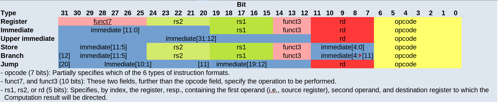
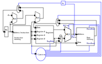

Digitales Design trifft auf Computerarchitektur
RISC vs. CISC und die RISC-V-Architektur
Bestehende Prozessortypen können nach ihrem Befehlssatz klassifiziert werden: Computer mit reduziertem Befehlssatz (RISC), Computer mit komplexem Befehlssatz (CISC) und Mischformen. Während Miniprozessoren wie ARM für eingebettete Systeme meist reduzierte Befehlssätze verwenden , sind heutige Workstation- und Server-Architekturen (x86, x86_64) Mischformen aus RISC und CISC. Die Idee eines reduzierten Befehlssatzes besteht darin, große komplexe Anweisungen und mehrere unterschiedliche Adressierungsmodi (wie sie typischerweise in x86-Architekturen verwendet werden) zu vermeiden. Zu den Vorteilen einer RISC-Architektur gehören kürzere Pipelines, die eine schnellere Taktung ermöglichen. RISC-Architekturen folgen einem einfachen Schema: „Abrufen → Dekodieren → Operanden abrufen → Ausführen → Zurückschreiben“ Außerdem haben Anweisungen eine konstante Länge, Speicheroperationen sind von arithmetischen Operationen getrennt, was als Load/Store-Architektur bekannt ist. RISC-V ist ein offener Standard für die Befehlssatzarchitektur (ISA). Der größte Teil dieses Beitrags bezieht sich auf das beliebte Buch „Computer Organization and Design (RISC-V) Edition“ von Hennessey und Patterson.
RISC-V Assembler
Hier stellen wir den RISC-V Assembler vor. Die hier gezeigte Teilmenge ist etwas größer als die, die wir später implementieren werden. Zum Beispiel werden auch unmittelbare Anweisungen wie „addi“ angezeigt, die notwendig sind, um Konstanten in Register zu laden. Das unten gezeigte Beispielprogramm zählt von 0 bis 10 und verwendet dabei eine Schleife.
ADDI x2, x0, 1 ADDI x3, x0, 10 loop: ADD x1, x1, x2 SW x1, 4(x0) BNE x3, x1, loop HLT
Registertyp: Anweisung [Zielreg] [Reg1] [Reg2]
Lade-/Speichertyp: Anweisung [Zielreg] [Byte-Offset(Reg1)]
Verzweigungstyp: Anweisung [Zielreg] [Reg1] [Zielmarke]
Bei den Lade-/Speicheranweisungen enthält reg1 die Startadresse, während der Byte-Offset die Größe des in das Register geladenen Wertes (normalerweise 4) bzw. des in den Speicher geschriebenen Wertes enthält .
Nachfolgend finden Sie eine Übersicht über die Befehlsformate der verschiedenen Typen:

Eine minimale Implementierung
Die minimal funktionierende Teilmenge einer RISC-V-Implementierung enthält die folgenden Anweisungen:
-
Arithmetisch-logische Anweisungen 'add', 'sub', 'and' und 'or' [Registertyp-Anweisungen]
-
Speicherreferenzanweisungen wie load word (lw) und store word (sw) [Speichertyp-Anweisungen]
-
Bedingte Sprungbefehle wie „Branch-if-equal (beq)“ [Verzweigungsbefehle]
-
Wir werden sehen, wie sich die gewählte Befehlssatzarchitektur auf leistungsbezogene Schlüsselaspekte wie Taktrate und Zyklen pro Befehl (CPI) auswirkt. Wir werden auch sehen, dass sich die verschiedenen Befehlstypen erst in den späteren Phasen des Fetch→Decode→ Execute-Zyklus unterscheiden
Die ersten beiden Schritte sind bei jeder Anweisung identisch:
-
Der Programmzähler (PC) zeigt auf den aktuellen Code, der ausgeführt wird. Die Adresse wird an den Speicher gesendet, um die aktuelle Anweisung aus dem Speicher abzurufen.
-
Lesen von zwei (eine für die lw-Anweisung) Registern, die Anweisungsfelder enthalten die Registernummern.
Die nächsten Schritte hängen vom Befehlstyp ab, nutzen jedoch weiterhin dieselben Ressourcen. Beispielsweise wird die ALU von Register-Befehlen zur Datenberechnung verwendet, während sie auch von Speicher-Befehlen zur Adressberechnung und von Verzweigungsbefehlen für den Gleichheitstest verwendet wird. Erst nach dieser ALU unterscheiden sich die verschiedenen Befehlstypen wirklich.
image:../images/how_does_cpu/cpu_structure.svg
Wie wir sehen werden, erklärt das unten gezeigte abstrakte Schema nicht alle Fälle. Wir benötigen ein weiteres erweitertes Schema, das auch die Steuerteile zeigt.

Der Fetch-Decode-Execute-Zyklus für die verschiedenen Befehlstypen
Wir beginnen mit dem üblichen Fetch-Decode-Execute-Zyklus eines gewöhnlichen RISC-Prozessors und zeigen dessen Funktionsweise für typische Befehle.
Der vollständige Zyklus ist: Fetch → Decode → Fetch Operands → Execute → Write Back
Typ |
Beispielanweisung |
Fetch |
Decode |
Fetch Operands |
Execute |
Write Back |
Register |
add, sub,and,or |
fetch instruction, increase PC by 4 |
Decode instruction |
Fetch operands from registers |
Execute calculation in ALU |
Write value back to data memory. |
Speichern |
lw,sw |
Abrufanweisung, PC um 4 erhöhen |
Dekodieranweisung |
Operand |
Adresse berechnen |
Daten aus dem Speicher lesen/in den Speicher schreiben |
Verzweigung |
beq |
Abrufanweisung, PC auf Zieladresse setzen |
Dekodieranweisung |
Operanden aus Registern abrufen |
Gleichheitstest (für beq) |
Multiplexer für Adressberechnung auf zweiten Addierer umschalten |
Der Anweisungsteil
Um eine CPU auf dieser abstrakten Ebene zu erklären, müssen wir einige weitere Konzepte einführen, z. B. dass eine Anweisung, die im Speicher gespeichert ist, unter einer bestimmten Adresse zugänglich ist. Eine Adresse in RISC-V-Standards ist ein 32 Bit langer Wert, der auf eine bestimmte Zelle in einem Speicher-Array Der Program Counter (PC) ist ein Register, das auf eine bestimmte Adresse im Speicher/in der Registerdatei zeigt. Der Programmzähler ist mit dem ersten Adressaddierer mit einem konstanten Integer von 4 (dem Adressoffset, 4 * 1 Byte = 32 Bit) verbunden.
Wenn die Anweisung im Speicher eine adressmodifizierende Anweisung ist, wird der angegebene Wert vom zweiten Adressaddierer hinzugefügt. Auf diese Weise können wir Anweisungen zum Springen generieren.
Der Datenpfad
Der Datenpfad zeigt einige Elemente, mit denen wir bereits vertraut sind – die ALU – sowie Elemente, mit denen wir noch nicht vertraut sind – die Speicherblöcke – rechts die sogenannte Registerdatei und links der Datenspeicher. Beide Eingänge der ALU sind mit einem (anderen) Register verbunden.
Der Steuerteil
Der Steuerteil ist das Element mit der größten Blackbox. Wir wissen bereits, wie die Multiplexer funktionieren, und wir sehen bereits eine Rückkopplungsleitung für die Verzweigungssteuerung. Die meisten Elemente in dieser abstrakten Ansicht bleiben dem Leser jedoch unbekannt. Dies wollen wir ändern, indem wir uns das Ganze genauer ansehen.
(translation: 2024-12-29)